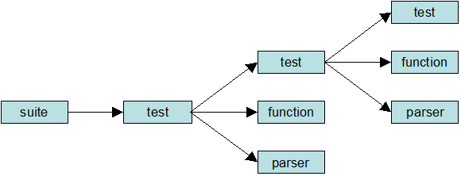

Compliance Test Language (CTL) 0.5
- Contributors:
- R. Martell
- Chuck Morris <chuck |DOT| morris |AT| ngc |DOT| com>
- J. Parr-Pearson
Purpose
This document establishes Compliance Test Language, an XML grammar for
documenting and scripting suites of tests for verifying that an implementation
of a specification complies with the specification.
This document does:
- Define the structure of a test suite and tests in the test suite.
- Define the elements that can be used to form the test script code.
- Define interfaces for producing Java classes to extend the basic CTL functionality.
- Provide informative examples test scripts and sample script output.
- Provide guidelines on terminology used to properly document tests.
It does not:
- Define an interface for submitting tests to a test engine.
- Define a normative format for logging output from a test engine.
- Define a normative format for documentation generated from the test suite
Revision history
| Revision |
Date |
Comments |
| 0.5 |
2007-06-15 |
New capabilities documented: XInclude support; multi-part requests; ZipParser. |
| 0.4 |
2006-09-06 |
Submitted as OGC Discussion Paper |
1. Overview of CTL
A test suite in CTL consists of a set of objects. The initial object is a
suite, which identifies a starting test. The starting test contains instructions
that may call other tests or use functions and parsers. See Figure 1 below.
Figure 1: Structure of a CTL test suite

A CTL file is an XML file that contains a CTL object or a package element
as its root element. The package element, which is a container for multiple
CTL objects, is described in detail in section 7. Each CTL object is identified
by a unique, namespace qualified name, so the set of objects in a test suite
may span several files. The CTL objects are described in section 8.
Test objects contain programmatic code that consists of XSL instructions
and/or CTL instructions. The CTL instructions are described in section 9.
Some parser objects are built-in to CTL, and may be used without declaring
a parser object. The built-in parsers are described in section 10.
2. Package
2.1 Introduction
The <package> element is a container for CTL objects or traditional
XSL templates. Each CTL object is complete on its own and may be placed in
its own file, or several objects may be placed in a package for the convenience
of grouping them in the same file.
2.2 Encoding
<ctl:package xmlns:ctl="http://www.occamlab.com/ctl"
(tns:anyAttribute xmlns:tns="##other")?>
<xi:include xmlns:xi="http://www.w3.org/2001/XInclude" /> *
<ctl:suite /> *
<ctl:test /> *
<ctl:package /> *
<ctl:parser /> *
<ctl:function /> *
<xsl:template xmlns:xsl="http://www.w3.org/1999/XSL/Transform" /> *
</ctl:package>
3. CTL Objects
3.1 Suite
3.1.1 Introduction
The <suite> element establishes a set of tests. It names a test suite,
describes its purpose, and identifies the starting test where processing
begins when the test suite is executed.
3.1.2 Encoding
<suite name="xsd:QName" xmlns="http://www.occamlab.com/ctl">
<title>Test suite title</title>
<description>The purpose of the test suite</description> ?
<starting-test>xsd:QName</starting-test>
</suite>
3.1.3 Example
<ctl:suite name="example:suite">
<ctl:title>Example Test Suite</ctl:title>
<ctl:description>
Tests compliance to the Example Service Implementation Specification, version 1.0
</ctl:description>
<ctl:starting-test>example:main</ctl:starting-test>
</ctl:suite>
3.2 Test
3.2.1 Introduction
The <test> element establishes an individual test. It states an
assertion and contains program code to test the assertion.
3.2.2 Encoding
<test name="xsd:QName" xmlns="http://www.occamlab.com/ctl">
<param name="xsd:string">Parameter description</param> *
<context>Describes the calling context</context> ?
<assertion>Condition or system state to be verified</assertion>
<comments>comment</comments> *
<link title="xsd:string">xsd:anyURI</link> *
<code>
<!-- one or more instructions -->
</code>
</test>
3.2.3 Element descriptions
3.2.3.1 param
Tests may have zero or more parameters specified as <param> elements,
named with a name attribute. The content of the element should describe the
parameter.
3.2.3.2 context
When a test is executed, there is always an XML tree in memory, and a
current node within the tree. This is known as the context. In some cases,
the context in which a test is called is important, while in other cases in
may not matter. If the test code depends on the context, the test should
describe the proper context state with a <context> element.
3.2.3.3 assertion
The <assertion> element specifies the test assertion. The assertion
is a statement derived from the specification being tested which is true for
a valid implementation.
The assertion may contain references to the labels
of the parameters or the context by using {$name} notation. For example,
{$context} refers to the current context label, and {$p1} refers to the
label of the parameter named “p1”. The value of the label may evaluate to
the content of the <context> or <param> element, or the value
of the label or label-expr attribute on the <for-each> or <with-param>
elements, depending on whether documentation is being generated or whether
the test is actually being executed.
In some cases, the assertion text may be vague if read in isolation,
but its meaning should be clear when viewed in the context of the assertion
of the calling test. For example, the assertion “A summary is present” is
vague, but if the assertion of the parent test is “HTML tables are properly
formatted”, then it is clear that the test looks for a summary on an HTML
table.
The <comments> element allows documentation of additional comments
on the purpose of the test or method of verification. The comments should
apply to the test as a whole. Of course, XML comments inside <!-- -->
tags may also be used, but this comment tag is more formal and may be used
in documentation.
3.2.3.5 link
Zero or more <link> elements may be used to provide links back to
the place or places in the specification where the assertion was derived
from.
3.2.3.6 code
The <code> element contains the programmatic code used to verify
the assertion. Any XML is allowed in the code element. It should contain
CTL instructions and/or XSL instructions for evaluation by a test engine.
The test will pass unless one or more <fail> instructions are executed.
3.2.4 Example
<ctl:test name="example:zulu">
<ctl:param name="time">time string</ctl:param>
<ctl:assertion>
If the hours field is included in {$time}, the suffix Z (for zulu) is required.
</ctl:assertion>
<ctl:link>wms:B.2.1</ctl:link>
<ctl:code>
<xsl:if test="contains($time, 'T')">
<xsl:variable name="len" select="string-length($time)"/>
<xsl:if test="not(substring($time, $len) = 'Z')">
<ctl:fail/>
</xsl:if>
</xsl:if>
</ctl:code>
</ctl:test>
3.3 Function
3.3.1 Introduction
The <function> element is used to declare user-defined functions
or external java functions. These functions may be called as XPath functions
in instructions that use ${XPath-expression}s, or they may be called directly
with the <call-function> instruction.
3.3.2 Encoding
<ctl:function name="xsd:QName" xmlns:ctl="http://www.occamlab.com/ctl">
<ctl:description>Function description</ctl:description> ?
<ctl:param name="xsd:string">Parameter description</ctl:param> *
<!-- var-params only applies to a Java-based function -->
<ctl:var-params min="xsd:int" max="xsd:int" /> ?
<ctl:context>Describes the calling context</ctl:context> ?
<ctl:return>Describes what the function returns</ctl:return> ?
<ctl:comments>Comments about the function</ctl:comments> *
<!-- choose either ctl:code or ctl:java -->
<ctl:code>
<!-- one or more instructions -->
</ctl:code>
<ctl:java class="xsd:string" method="xsd:string" initialized="xsd:boolean">
<!-- initialization parameters -->
<ctl:with-param name="xsd:string" select="${XPath-expression}"?> *
<!-- literal XML content if @select is absent -->
<ctl:with-param>
</ctl:java>
</ctl:function>
3.3.3 Element descriptions
3.3.3.1 param
Functions may have zero or more parameters specified as <param>
elements, named with a name attribute. The content of the element should
describe the parameter.
3.3.3.2 var-params
Some functions implemented as Java methods may be called with a variable
number of parameters. This optional element indicates that a variable number
of parameters is allowed. It has attributes min and max,
indicating the maximum and minimum number of parameters allowed.
3.3.3.3 context
When a function is executed, there is always an XML tree in memory, and
a current node within the tree. This is known as the context. In some cases,
the context in which a function is called is important, while in other cases
in may not matter. If the function code depends on the context, it should
describe the proper context state with a <context> element.
3.3.3.4 return
The optional <return> element should be used to provide a brief
description of what the function returns.
3.3.3.5 description
The optional <description> element is used to describe the
function.
Functions may contain zero or more <comment> elements.
3.3.3.7 code
The <code> element is required unless a <java> element is
supplied. Any XML is allowed in the code element. It should contain CTL
instructions and/or XSL instructions implementing the function.
3.3.3.8 java
The <java> element is required unless a <code> element is
supplied. It indicates the function is implemented as an external Java
method. It contains class and method attributes that identify the Java class
and method.
For a java method to be used, it must be implemented as a public method.
If the method is not static, this must be indicated by setting the initialized
attribute to "true". This will initialize the class, calling the class
constructor (which also must be public) by passing it the parameter values
supplied by the optional <with-param> elements.
There are restrictions on the parameter types that may be used in the
Java method and the class constructor. They must be one of the built-in
primitive types (boolean, char, byte, short, int, long, float, double),
String, org.w3c.dom.Node, or org.w3c.dom.NodeList.
If there is a <context> element, it must be the first parameter in
the method and must be of type org.w3c.dom.Node or org.w3c.dom.NodeList.
The method may return a primitive type value, or a value of type String,
org.w3c.dom.Node, or org.w3c.dom.NodeList.
3.3.4 Examples
<function name="example:add" xmlns="http://www.occamlab.com/ctl">
<description>Adds two numbers</description>
<param name="num1">First Number</param>
<param name="num2">Second Number</param>
<return>num1 + num2</return>
<code>
<xsl:value-of xmlns:xsl="http://www.w3.org/1999/XSL/Transform"
select="$num1 + $num2" />
</code>
</function>
<function name="example:sqrt" xmlns="http://www.occamlab.com/ctl">
<description>Calculates a square root</description>
<param name="num"/>
<return>the square root of num</return>
<java class="java.lang.Math" method="sqrt"/>
</function>
3.4 Parser
3.4.1 Introduction
The <parser> element is used to declare a parser and link it to an
external Java implementation. Parsers are used in the <request>
instruction to convert the response from a web service into well-formed XML
for processing.
3.4.2 Encoding
<ctl:parser name="xsd:QName" xmlns:ctl="http://www.occamlab.com/ctl">
<ctl:description>Parser description</ctl:description> ?
<ctl:comments>Comments about the parser</ctl:comments> *
<ctl:java class="xsd:string" method="xsd:string" initialized="xsd:boolean">
<!-- initialization parameters -->
<ctl:with-param name="xsd:string" select="${XPath-expression}"?> *
<!-- literal XML content if @select is absent -->
<ctl:with-param>
</ctl:java>
</ctl:parser>
3.4.3 Element descriptions
3.4.3.1 description
The optional <description> element is used to describe the parser.
Parsers may contain zero or more <comment> elements.
3.4.3.3 java
The required <java> element contains class and method attributes
that identify the Java class and method. The Java method used must be
implemented as a public method. If the method is not static, this must be
indicated by setting the initialized attribute to "true"; this
will initialize the class, calling the class constructor (which also must
be public) by passing it the parameter values supplied by the optional
<with-param> elements.
Parser methods must contain three parameters. The first is of type
java.net.URLConnection and contains the URLConnection object
used to make the web service request. The second is of type org.w3c.Element,
and contains an a copy of the parser element. The third is of type java.io.PrintWriter
and can be used to write messages to the log. The parser method should
return an XML document of type org.w3c.Document containing parsed XML,
a String, or null if it encounters an error.
4. Instructions
The <form> instruction is used to retrieve user input. A Swing- or
XHTML-based form is generated and presented to the user. The user may the
fill in the fields on the form and press a submit button. The instruction
returns the values of the form fields and the button that was pressed.
The form instruction may contain a combination of literal XML elements
and/or other CTL or XSL instructions. When any enclosed instructions have
been evaluated, the resulting XML shall conform to this encoding.
<ctl:form xmlns:ctl="http://www.occamlab.com/ctl"
height="xsd:positiveInteger" width="xsd:positiveInteger">
<!-- XHTML Basic markup -->
</ctl:form>
The form element contains height and width attributes, used to specify
the desired height and width of the form in pixels. The user agent should
regard these as hints on the size of window required, but does not have to
follow these guidelines.
The content of the form should evaluate into XHTML
Basic elements. All of the XHTML Basic elements valid inside the XHTML
Basic <form> element are supported, with the exception of the <object>
element.
Of particular interest are the XHTML Basic elements that define form
controls: <input>, <select>, and <textarea>. These elements
can be used to define user options that the form will return. The form must
contain at least one <input type="submit"> element to allow the user
to submit the form.
When the user presses a submit button on the form, the instruction completes.
It returns the user input as a set of key-value pairs, where the key corresponds
to a control name and the value corresponds to the control value. A key-value
pair is generated only for successful controls, as formally defined in
section
17.13.2 of the HTML 4.01 specification.
The resulting form data set shall conform to this encoding:
<values>
<value key="xsd:string">xsd:string</value> *
</values>
The following form will be displayed to the user graphically as shown in
Figure 2.
<ctl:form xmlns:ctl="http://www.occamlab.com/ctl">
<p>
<img src="http://www.google.com/intl/en/images/logo.gif"/><br/>
Do you see the Google logo?<br/>
<input type="submit" name="answer" value="yes"/>
<input type="submit" name="answer" value="no"/>
</p>
</ctl:form>
Figure 2: Rendering of ctl:form content

If the user presses the "yes" button, the results will look like this:
<values>
<value key="answer">yes</value>
</values>
4.2 Request
4.2.1 Introduction
The <request> element submits an HTTP request to a web service or
other resource, and returns an XML representation of the response.
4.2.2 Encoding
The request instruction may contain a combination of literal XML elements
and/or other CTL or XSL instructions. When any enclosed instructions have
been evaluated, the resulting XML shall conform to the following encoding.
<ctl:request xmlns:ctl="http://www.occamlab.com/ctl">
<ctl:url>xsd:anyURI</ctl:url>
<ctl:method>[GET | POST | HEAD]</ctl:method>
<ctl:param name="xsd:string">xsd:string</ctl:param> *
<ctl:body> ?
<!-- text/plain or application/xml entity (POST only) -->
</ctl:body>
<ctl:parser /> ?
</ctl:request>
4.2.3 Element and attribute descriptions
4.2.3.1 url
The required <url> element indicates the web service or other HTTP
resource where the request will be submitted.
4.2.3.2 method
The required <method> element indicates the HTTP method that will
be used to make the request. Supported method types are get, post, and head.
4.2.3.3 param
Optional <param> elements may be included to supply CGI parameters
for the request. The CGI parameters are added to the URL before the request
is sent.
4.2.3.4 body
The <body> element is used only for requests where the method is
set to "POST". It contains the data to post when the request is sent. The
element may contain character data (text/plain media type), which is passed
on directly, or XML (application/xml media type) which is serialized and
then passed on.
4.2.3.5 parser
A parser may be used to instruct the engine how to convert the response
from the request into an XML representation. If present, the name of this
element should correspond to the name attribute of a parser element (see
section 3.4). Parsers may contain various required or
optional attributes or elements, depending on the parser implementation.
See section FIXME for the correct encoding for built-in
parsers.
4.2.4 Results
The request element returns an XML representation of the response, as
generated by the parser. If no parser element is present and the response
is well-formed XML, the XML is returned. Otherwise, nothing is returned.
4.2.5 Example
<request xmlns="http://www.occamlab.com/ctl">
<url>http://some.host.org/wms</url>
<method>GET</method>
<param name="SERVICE">WMS</param>
<param name="REQUEST">GetCapabilities</param>
<param name="VeRsIoN">1.1.1</param>
</request>
4.3 Call-Test
4.3.1 Introduction
The call-test instruction executes a sub-test.
4.3.2 Encoding
<ctl:call-test name="xsd:QName" xmlns:ctl="http://www.occamlab.com/ctl">
<ctl:with-param name="xsd:string"
label="xsd:string"
label-expr="${XPath-expression}"
select="${XPath-expression}"?> *
<!-- literal value if @select is absent --> *
</ctl:with-param>
</ctl:call-test>
4.3.3 Element and attribute descriptions
4.3.3.1 Attribute: name
The name attribute identifies the test to execute, and corresponds to
the name of a <test> element as described in section 3.2.
4.3.3.2 Element: with-param
If the test to be called contains parameters, values for the parameters
may be supplied using <with-param> elements. It is similar to the
<xsl:with-param> instruction, but it supports two additional attributes.
The optional label attribute is used for documentation purposes,
to describe what is being passed to the subtest in the current instance of
the call-test instruction. The optional label-expr attribute
is an ${XPath-expression} that is calculated at run time to generate a label
for the parameter. This value is substituted into the assertion text if the
assertion text contains a reference to the parameter.
4.3.4 Results
This instruction does not generate any content, but it will pass on
failures from the subtest. In other words, if the subtest fails, the
failure bubbles up the call stack, and parent tests will also fail.
4.3.5 Examples
<ctl:call-test name="example:subtest" xmlns:ctl="http://www.occamlab.com/ctl">
<ctl:with-param name="param1" select=".//table[1]"
label="The first table"
label-expr="concat('Table titled ', caption)"/>
</ctl:call-test>
<xsl:for-each select=".//table">
<ctl:call-test name="example:subtest">
<ctl:with-param name="param1" label="Each table"
label-expr="concat('Table titled ', caption)">
<xsl:value-of select="."/>
</ctl:with-param>
</ctl:call-test>
</xsl:for-each>
4.4 For-each
4.4.1 Introduction
The for-each instruction loops through each node in a node-set, making
it the current node and processing the instructions in the for-each
instruction body. It is identical to the <xsl:for-each> instruction,
except that it allows setting labels with the label and label-expr attributes.
4.4.2 Encoding
<ctl:for-each xmlns:ctl="http://www.occamlab.com/ctl"
select="${XPath-expression}"
label="xsd:string"
label-expr="${XPath-expression}">
<!-- one or more instructions -->
</ctl:for-each>
4.4.3 Element and attribute descriptions
4.4.3.1 Attribute: select
The required select attribute shall specify an ${XPath-expression} that
evaluates to a node-set.
4.4.3.2 Attribute: label
The optional label attribute is used for documentation purposes. It
describes the context for any enclosed call-test instructions.
4.4.3.3 Attribute: label-expr
The optional label-expr attribute is an ${XPath-expression} that is
calculated at run time to generate a label for the context. This value is
substituted into the assertion text of any subtests that contains a reference
to the context.
4.4.3.4 Content: instructions
The body of the for-each instruction shall contain CTL instructions
and/or XSL instructions. These instructions are processed for each node
in the node-set specified by the select attribute, using that node as the
current node.
4.4.4 Results
Returns any XML returned by processing the enclosed instructions.
4.4.5 Example
<ctl:for-each xmlns:ctl="http://www.occamlab.com/ctl"
select=".//table"
label="Each table"
label-expr="concat('Table titled ', caption)">
<ctl:call-test name="example:subtest" />
</for-each>
4.5 Message
4.5.1 Introduction
The message instruction presents a message to the user. For instance, it
may be used to describe what is wrong when a test fails. It may also be
useful for debugging purposes when tests are in the development stage.
The message may be supplied as an ${XPath-expression} using the select
attribute or it may be provided as the body of the element. In either case,
the message presented to the user will be the string value of the selected
nodes.
4.5.2 Encoding
<ctl:message xmlns:ctl="http://www.occamlab.com/ctl" select="${XPath-expression}">
<!-- message text if @select is absent -->
</ctl:message>
4.5.3 Element and attribute descriptions
4.5.3.1 Attribute: select
The optional select attribute specifies an ${XPath-expression}. If present,
the message will be generated by evaluating the expression and converting
it to a string.
4.5.3.2 Content: message
If there is no select attribute, the content of the message
instruction specifies the message. It may contain mixed content, including
character data and other instructions. When any enclosed instructions have
been evaluated, the result is converted to a string to generate the message.
4.5.4 Results
This instruction does not generate any content.
4.5.5 Examples
<ctl:message xmlns:ctl="http://www.occamlab.com/ctl" select="concat(’Table ’, caption)" />
<ctl:message xmlns:ctl="http://www.occamlab.com/ctl">Table <xsl:value-of select="caption"/></ctl:message>
4.6 Fail
4.6.1 Introduction
The fail instruction is used to indicate that a test has failed.
4.6.2 Encoding
<ctl:fail xmlns:ctl="http://www.occamlab.com/ctl" />
4.6.3 Results
The instruction does not generate any content. When the test processor
encounters the fail instruction, it indicates that the test has failed.
However, this does not halt test execution. The rest of the instructions
will continue to be processed, including any subsequent calls to subtests,
but regardless of their results the current test will fail.
4.6.4 Examples
<xsl:if test="not(2 + 2 = 4)">
<ctl:message>[FAILURE] Addition error: expected 2 + 2 = 4</ctl:message>
<ctl:fail />
</xsl:if>
4.7 Call-Function
4.7.1 Introduction
The call-function instruction invokes a named function.
4.7.2 Encoding
<ctl:call-function name="xsd:QName" xmlns:ctl="http://www.occamlab.com/ctl">
<ctl:with-param name="xsd:string" select="${XPath-expression}"> *
<!-- parameter value if @select is absent -->
</ctl:with-param>
</ctl:call-function>
4.7.3 Element and attribute descriptions
4.7.3.1 Attribute: name
The name attribute identifies the function to execute, and corresponds
to the name of a <function> element as described in
section 3.3.
4.7.3.2 Element: with-param
If the test to be called contains parameters, values for the parameters
may be supplied using <with-param> elements. Parameters must be passed
in order. If the optional name attribute is specified, it must match the
parameter in the corresponding position in the function definition is named,
the names must match. As with the <xsl:with-param> instruction, the parameter
value may be specified as an XPath expression using the select attribute
or it may be specified using the content of the with-param element.
4.7.4 Results
This instruction returns the value of the function call.
4.7.5 Examples
<ctl:call-function name="example:myfunction" xmlns:ctl="http://www.occamlab.com/ctl">
<with-param select="$param1"/>
<with-param><param2-value/></with-param>
</call-function>
5. Built-in parsers
5.1 Introduction
This section describes several parser objects that are built-in to
Compliance Test Language and shall be supported by test processors. Tests
can use these parsers without declaring them.
5.2 CDataParser
5.2.1 Introduction
The CDataParser is a parser that parses the content into
character data.
5.2.2 Encoding
<ctlp:CDataParser xmlns:ctlp="http://www.occamlab.com/te/parsers" />
5.3 HTTPParser
5.3.1 Introduction
The HTTPParser is a parser that returns HTTP header information
uses other parser(s) to parse the content. It supports multipart messages.
5.3.2 Encoding
<ctlp:HTTPParser xmlns:ctlp="http://www.occamlab.com/te/parsers">
<ctlp:parse part="xsd:positiveInteger" mime="${media-type}"> *
<!-- parser instruction --> ?
</ctlp:parse>
</ctlp:HTTPParser>
5.3.3 Results
5.3.3.1 Standard media types
If the Content-Type header of the message is not multipart, the results
shall conform to the following encoding:
<response>
<status protocol="${protocol-version}" code="${status-code}">
${status-message}
</status>
<headers>
<header name="${header-name}"> *
${header-value}
</header>
</headers>
<content> ?
<!-- message body (XML entity) --> ?
</content>
</response>
5.3.3.2 Multi-part media types
If the Content-Type header of the message is multipart, the results shall
conform to the following encoding:
<multipart-response>
<status protocol="${protocol-version}" code="${status-code}">
${status-message}
</status>
<headers
<header name="${header-name}"> *
${header-value}
</header>
</headers>
<part num="xsd:positiveInteger"> *
<headers>
<header name="${header-name}"> *
${header-value}
</header>
</headers>
<content> ?
<!-- XML entity --> ?
</content>
</part>
</multipart-response>
5.4 XMLValidatingParser
5.4.1 Introduction
The XMLValidatingParser is a parser that parses data as XML
and validates it against one or more XML Schemas.
5.4.2 Encoding
<ctlp:XMLValidatingParser xmlns:ctlp="http://www.occamlab.com/te/parsers"
ignoreErrors="xsd:boolean" ignoreWarnings="xsd:boolean">
<ctlp:schemas> ?
<ctlp:schema type="[URL | File | Resource]"> +
${schema-location} <!-- required if @type is present -->
</ctlp:schema>
</ctlp:schemas>
</ctlp:XMLValidatingParser>
5.4.3 Results
The XMLValidatingParser attempts to parse the data stream
returned by a request into XML, and validates the XML against each of the
XML Schemas. Any validation errors and warnings are presented to the user.
If there are no errors or warnings, or if errors and warning are ignored,
the parser returns the XML. If the data stream cannot be parsed or there
are errors or warnings that are not ignored, no content is returned.
5.4.4 Example
<xsl:variable name="results"
xmlns:xsl="http://www.w3.org/1999/XSL/Transform"
xmlns:ctl="http://www.occamlab.com/ctl"
xmlns:ctlp="http://www.occamlab.com/te/parsers">
<ctl:request>
<ctl:url>http://www.example.com/example.xml</ctl:url>
<ctl:method>GET</ctl:method>
<ctlp:XMLValidatingParser>
<ctlp:schemas>
<ctlp:schema type="url">http://www.example.com/example.xsd</ctlp:schema>
</ctlp:schemas>
</ctlp:XMLValidatingParser>
</ctl:request>
</xsl:variable>
<xsl:if test="not($results/*)">
<ctl:message>[FAILURE} Parsing or validation errors.</ctl:message>
</xsl:if>